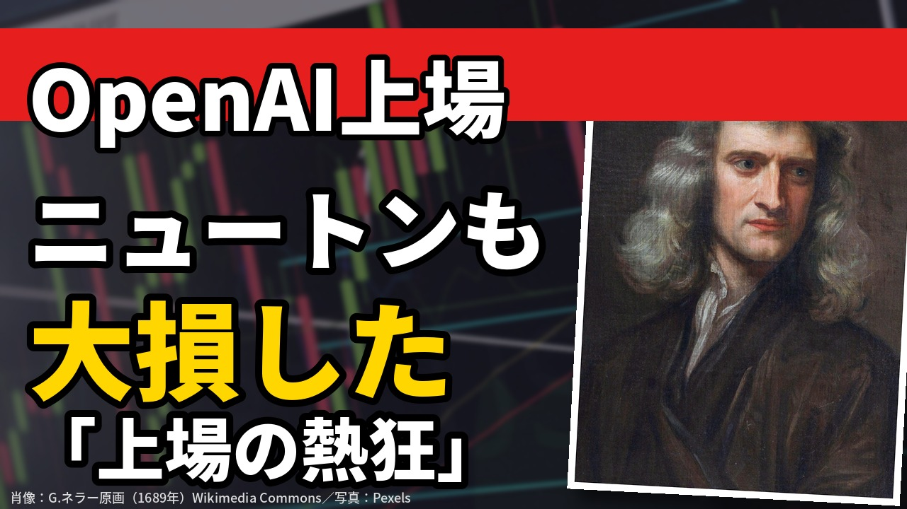
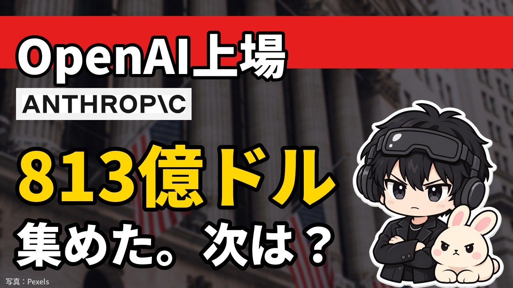
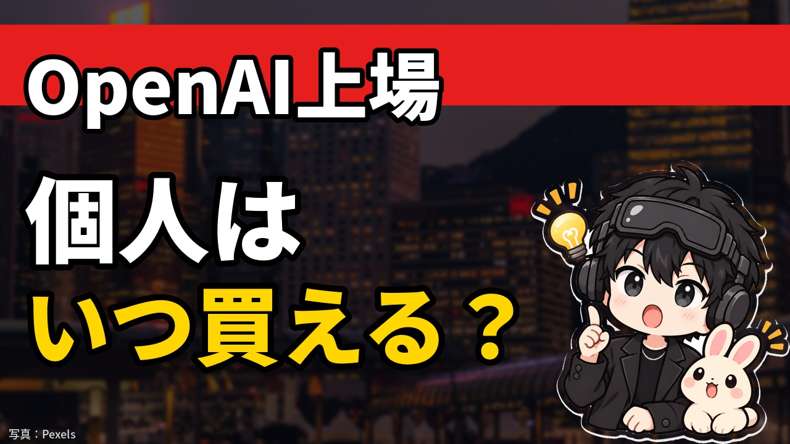

1. OpenAI上場はいつ？ニュートンも大損した「上場の熱狂」 2. OpenAI上場、アンソロピックは813億ドル集めた。次は？ 3. OpenAI上場、個人はいつ買える？ 4. OpenAI上場はいつ？CEOは「2026年はない」 5. OpenAI上場はいつ？世界初の上場は1602年
■案1改A こはるんが「ご主人」を紹介する形（おすすめ） こんにちは、相棒のこはるんです🐰 ご主人の Colne（コルン）を紹介します。 ご主人は、元資産運用会社所属・投資歴8年の投資家。株・為替・暗号資産を中心に、マクロや企業の動きも交えて相場を追っています。こはるんは、となりでニンジンをかじる係です🥕 このチャンネルでは、前の日の日本株とアメリカ株のニュースを、朝に1分半のショートでお届けしています。特集の動画もあります。 📌 登録すると ・Colne が X で注目する話題も、動画で追えます ・前の日の大きなニュースが、1分半で分かります ・ときどき、こはるんも出ます ※このチャンネルの動画は、特定の銘柄の売り買いをすすめるものではありません。 ■案1改B こはるんが「相棒」として紹介する形 はじめまして、Colne（コルン）の相棒のこはるんです🐰 Colne は、元資産運用会社所属・投資歴8年の投資家。株・為替・暗号資産を中心に、マクロや企業の動きも交えて相場を追っています。こはるんは、頭の上でチャートを見る係です。 このチャンネルでは、前の日の日本株とアメリカ株のニュースを、朝に1分半のショートでお届けしています。特集の動画もあります。 📌 登録すると ・Colne が X で注目する話題も、動画で追えます ・前の日の大きなニュースが、1分半で分かります ・ときどき、こはるんも出ます ※このチャンネルの動画は、特定の銘柄の売り買いをすすめるものではありません。